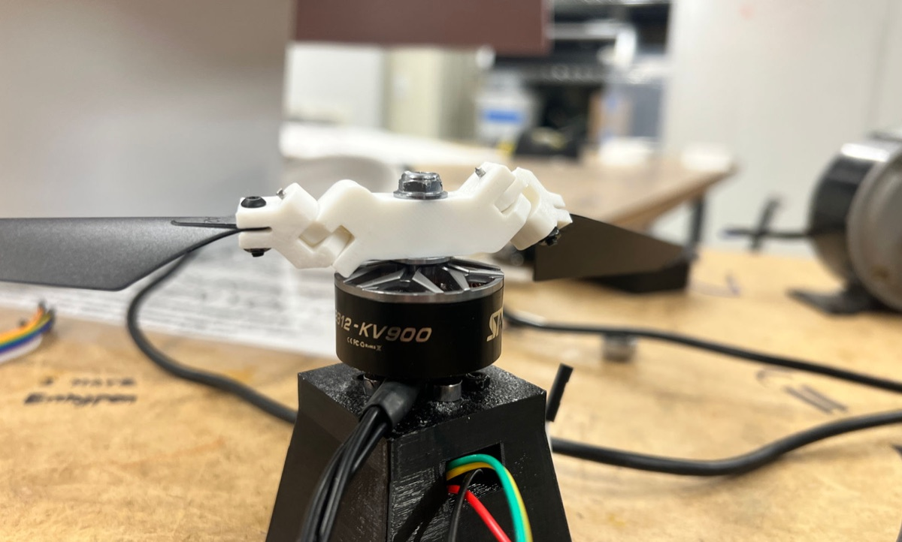
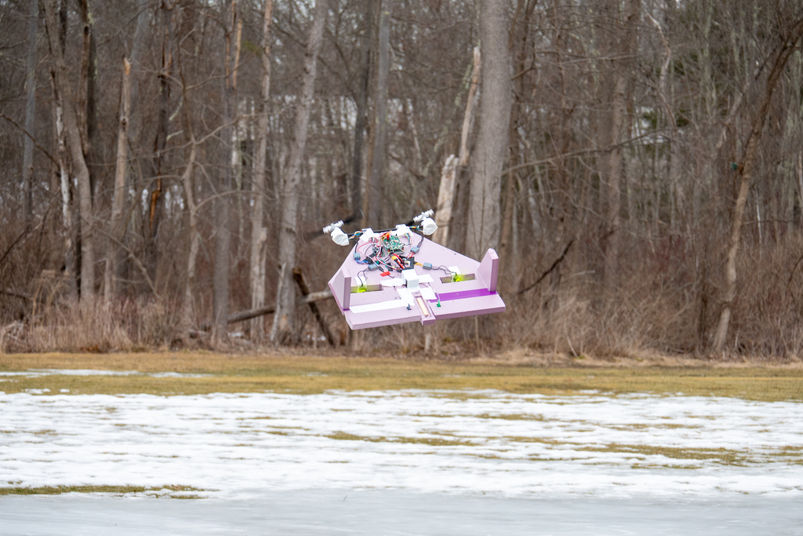
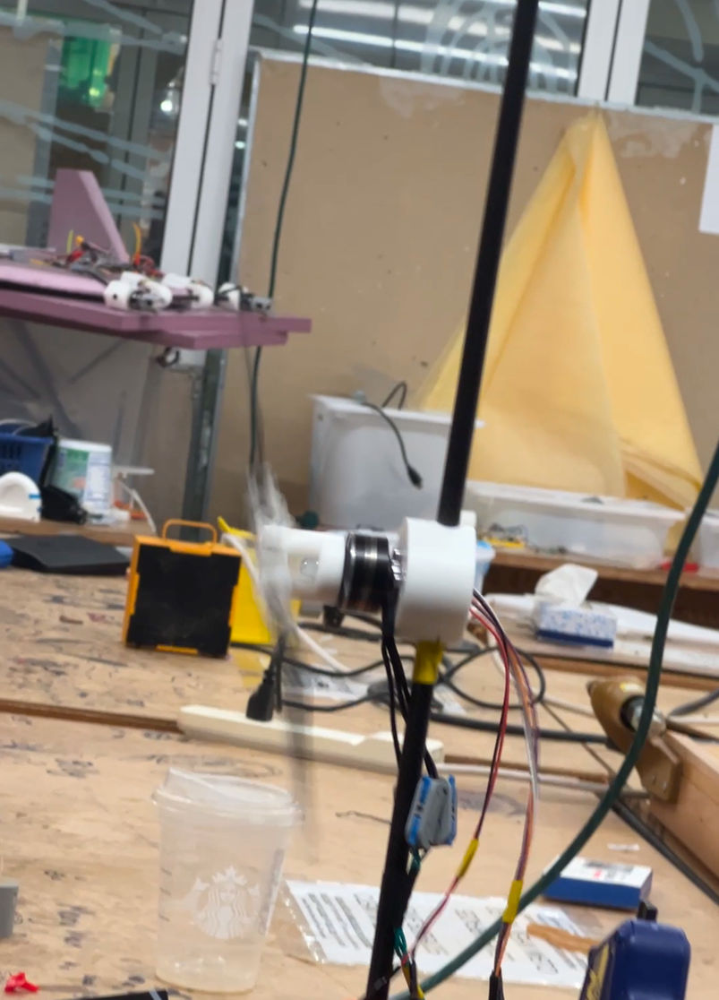
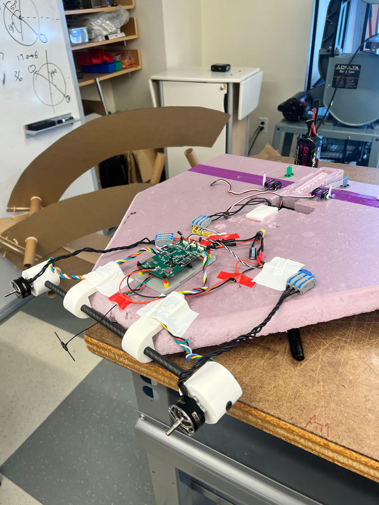
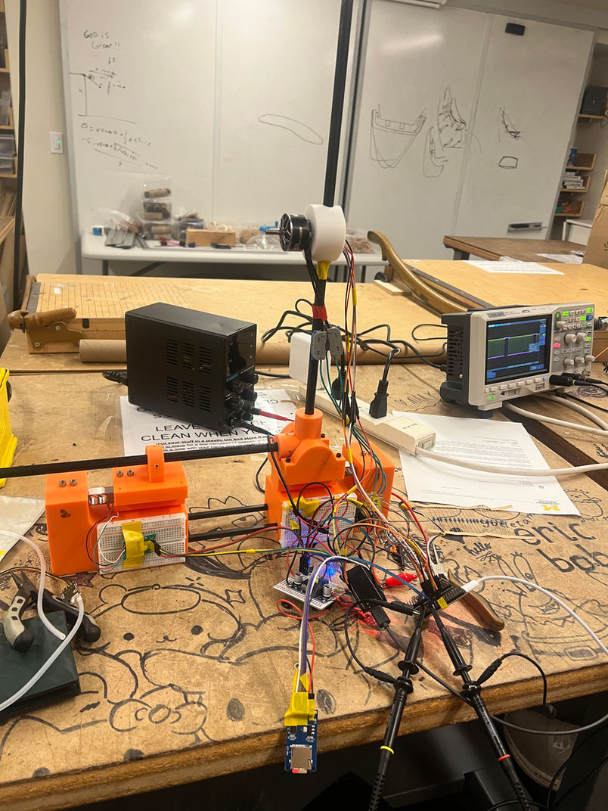
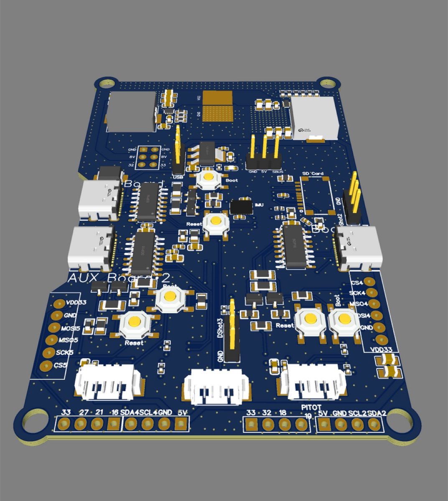
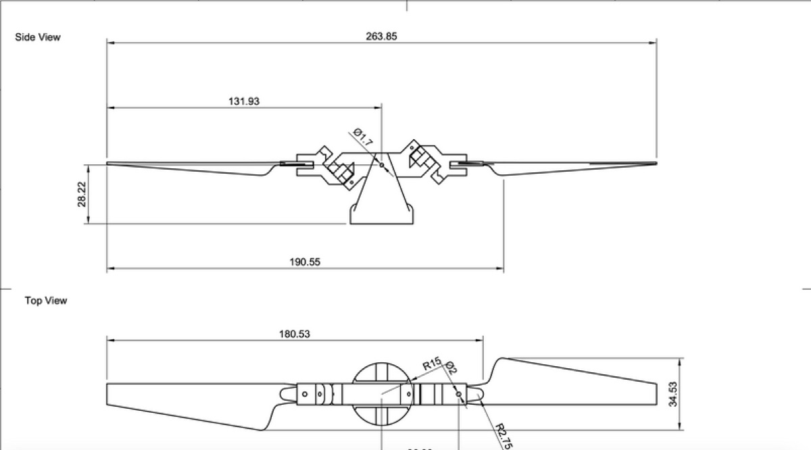

ViSA: Virtual Swashplate Aircraft
Engineering | September, 2024
Technical Highlights
High-Frequency Motor Control
Implemented a 32kHz interrupt service routine (ISR) to drive motors with sinusoidal motion profiles, enabling precise torque modulation for propeller hinge actuation without traditional ESC hardware.
Underactuated Control Theory
Developed control algorithms for an underactuated system where a single motor achieves three degrees of freedom (pitch, roll, y-translation) through acceleration-based propeller tilting.
Precision Bearing Hinge Design
Engineered a hinge mechanism using specialized load bearings to achieve low-friction, predictable propeller deflection response to motor torque inputs for stable flight dynamics.
CAD & Rapid Prototyping
Designed airframe and hinge assemblies in Autodesk Fusion 360, utilizing FDM 3D printing for rapid iteration and validation of mechanical designs.
6-DOF Flight Control
Achieved full six-degree-of-freedom control using only two motors by exploiting the virtual swashplate effect, eliminating traditional control surfaces and reducing mechanical complexity.
Embedded Flight Software
Developed flight control firmware in C++ to coordinate dual-motor sinusoidal commands, translating pilot inputs into acceleration profiles that produce desired aircraft attitude changes.
Awards
- 2025: Massachusetts Science and Engineering Fair (MSEF): First Place (Top 15/270 Projects)
Description
Rodolfo and I propose a new approach to achieving flight without traditional control surfaces, drawing inspiration from the University of Pennsylvania Modlab's swashplate-less bi-copter project. Their design uses a motor-driven propeller with a hinge mechanism that tilts the propeller in one direction during acceleration and the opposite during deceleration. This allows the motor to apply torque and control the propeller using only acceleration adjustments, creating an underactuated system where a single motor can achieve three degrees of freedom—pitch, roll, and translation along the y-axis. By using two such motors, six degrees of freedom can be achieved.
To our knowledge, this motor design has not yet been applied to fixed-wing UAVs, despite the potential for efficiency gains by eliminating control surfaces while maintaining full flight control. Our project aims to implement this concept, creating a fixed-wing aircraft with swashplate-less, motor-actuated control. We call our project ViSA: Virtual Swashplate Aircraft.
We plan to improve Modlab's design by using specialized load bearings on the hinge mechanism to achieve predictable propeller deflection based on motor torque.
Gallery






